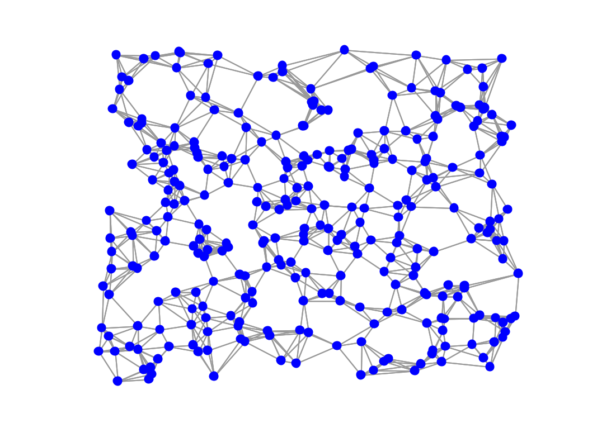

G = gsp_sensor(N); G = gsp_sensor( ); G = gsp_sensor(N, param);
This function creates a 2 dimensional random sensor graph. All the coordinates are between 0 and 1.
param is an optional structure with the following field
Example:
G = gsp_sensor(300); paramplot.show_edges = 1; gsp_plot_graph(G,paramplot);